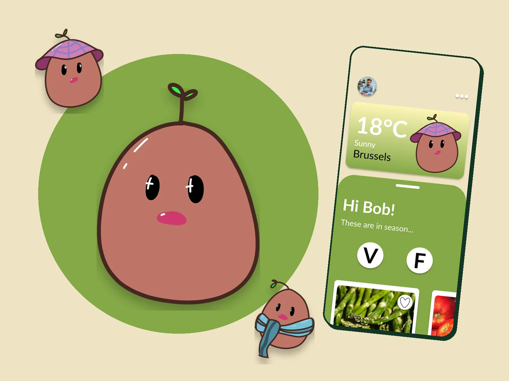
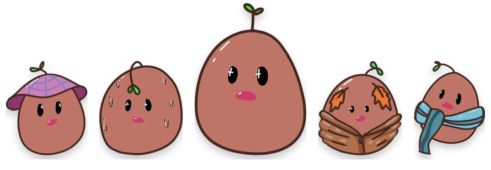
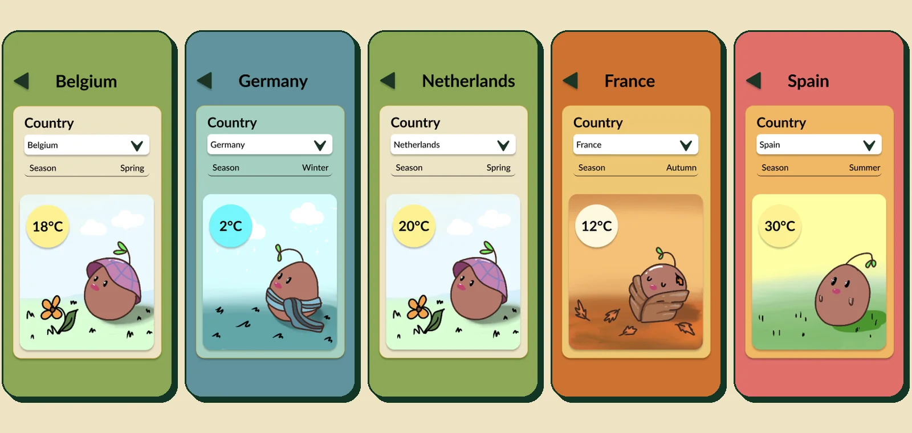
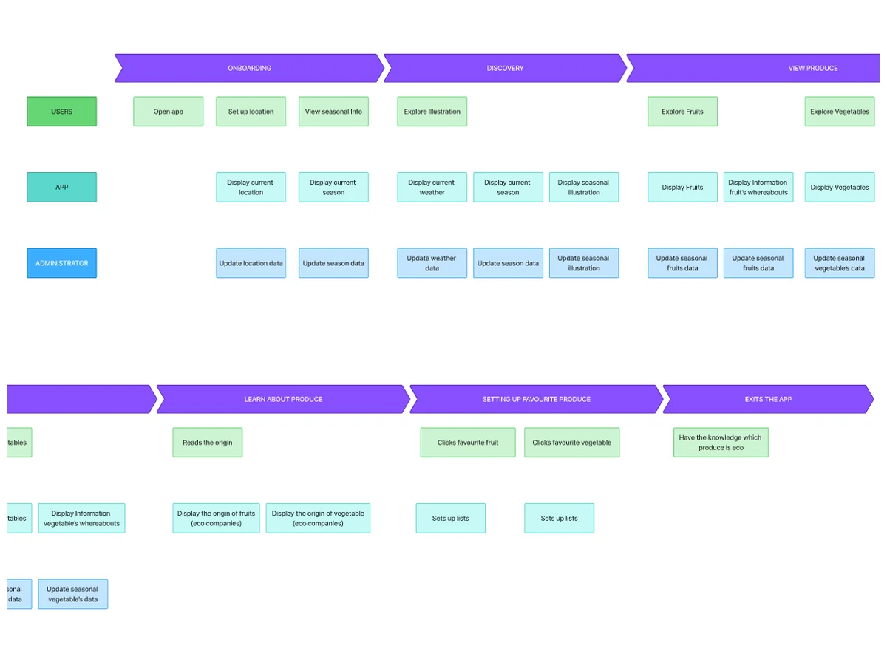
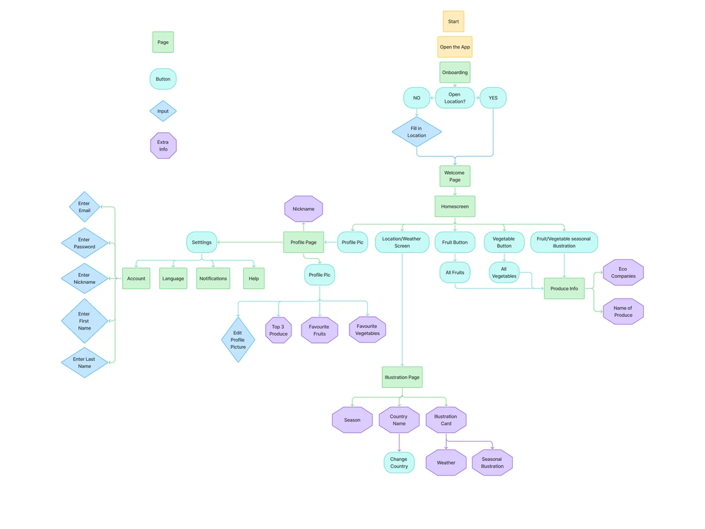
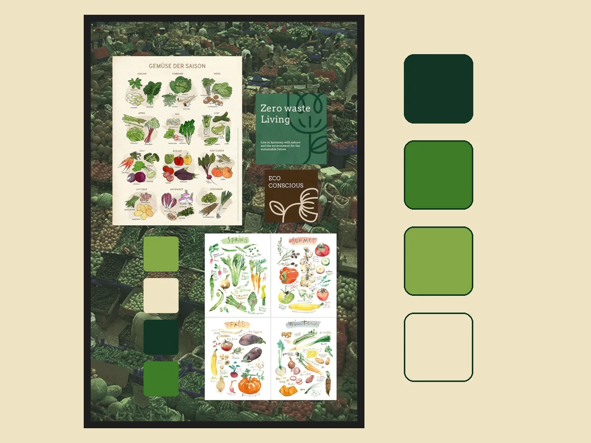
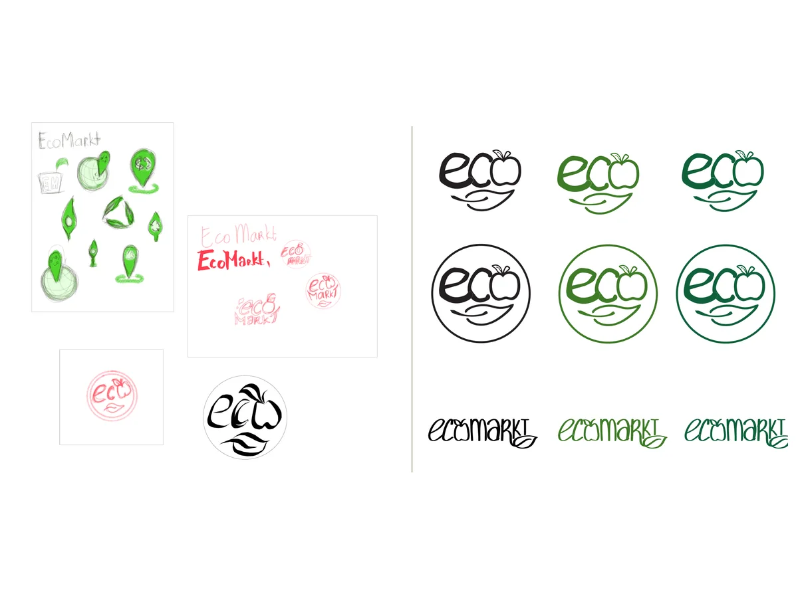
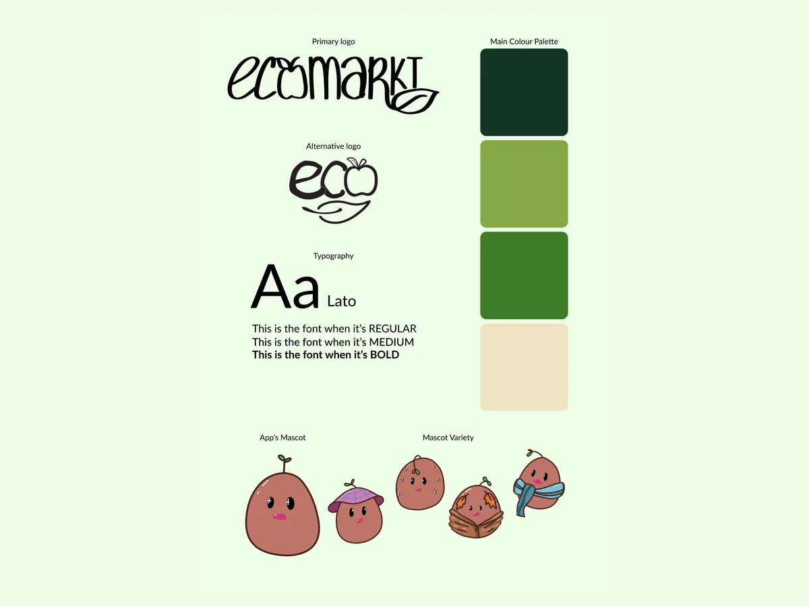
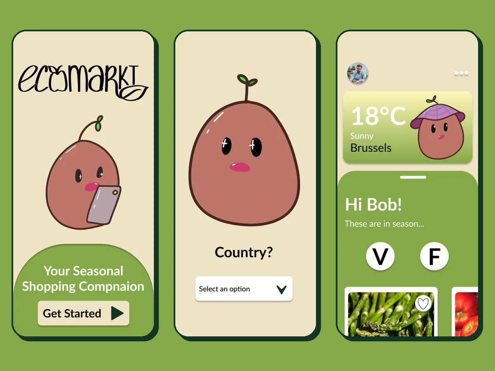
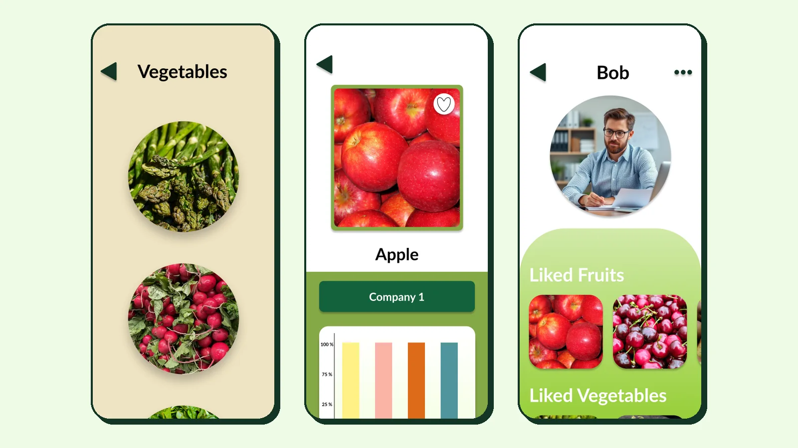

UI/UX · Illustration · Branding · School project
EcoMarkt
Your seasonal shopping companion: see what's in season where you live, guided by Egg, a little mascot that dresses for the weather.

- Role
- Mascot illustration, branding & UI design
- Tools
- Figma, Procreate
- Duration
- [X weeks]
- Team
- [Solo / team?]
01 Problem
Buying seasonal, local produce is better for the planet and often for your wallet, but most people don't know what's actually in season, and it changes from country to country. EcoMarkt shows you what's in season where you live, and who sells it nearby.
02 Meet Egg
This is Egg, EcoMarkt's mascot, drawn in Procreate: a round little seed with a sprout on top. Egg makes the app feel friendly instead of preachy, and has a job too: Egg changes outfits with the season and the weather, so you can see at a glance what time of year it is.
I also animated a little turnaround, drawn frame by frame, so Egg can spin around to say hi.

One mascot, four seasons
-
Spring A purple hat and the first flowers.
-
Summer Sweating it out in the sun.
-
Autumn Wrapped up while the leaves fall.
-
Winter Scarf on, snow falling.
Dressed for your country's weather
Pick a country and Egg shows up dressed for its season and temperature: a hat in a mild Belgian spring, a scarf at 2 °C in German winter, sweating at 30 °C in Spain.

03 Process
-

User journey
I mapped who uses EcoMarkt (shoppers, the app itself and an admin who keeps the seasonal data up to date) and followed persona Bob from hearing about the app to recommending it, from curious to happy. That pointed to a first-time tutorial and well-timed season notifications.
-

Story map & user flow
A story map broke that down into tasks, and the user flow turned them into screens: set your location once, then everything branches from the homescreen to seasonal produce, its eco origin, Egg's weather page and your favourites.
-

Moodboard
Markets, seasonal produce posters and eco brands set the mood: fresh, local and a little hand-made, in deep greens and a warm cream.
-

Logo
I sketched leaf and map-pin marks first, then landed on hand-lettered "eco" where the o becomes an apple, resting on a leaf.
-

Brand guide
The brand sheet ties it together: two logos, Lato, four greens and creams, and the mascot as part of the identity.
-

Final screens
Egg welcomes you, asks which country you shop in, and then sits in the weather card on the home screen, dressed for today.
04 Outcome
A Figma design of the full app: seasonal fruit and vegetable lists, a page per product with its availability through the year and the local companies that sell it, and a profile with your liked produce. [Add one or two sentences: what you learned and what you would improve next time.]

Produce and profile photos are used as example content and belong to their owners.